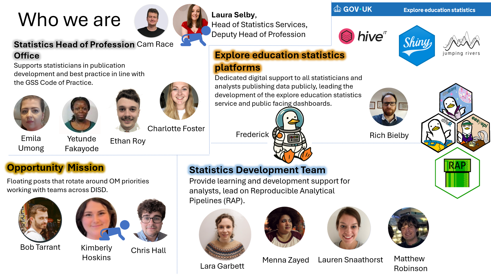

# Load packages
library(odbc)
library(DBI)
library(dplyr)
library(dbplyr)
# Set up Databricks connection
connection <- DBI::dbConnect(odbc::databricks(),
httpPath = Sys.getenv("DATABRICKS_SQL_WAREHOUSE_ID"))
# Pull in data from Databricks table
data <- dplyr::tbl(connection, dbplyr::in_catalog(
"catalog_40_copper_statistics_services",
"dbo",
"publicationtracking")) %>%
dplyr::collect()RAP and Technical Skills for Managers
Part 1: RAP principles
Introduction
Workshop purpose
This session is designed to cover the basic principles of RAP from the perspective of a manager, to outline the level of technical skills that are expected from technical managers, and to give you a chance to ask any questions.
Coding and technical skills form a core part of our work as analysts in DfE. To continue producing high quality statistics, teams need to maintain consistent levels of capability at all levels, and so should be looking to build and maintain these skills at every opportunity. If this doesn’t happen, staff turnover or changes in technology may leave you at risk of being left with processes that your team are unable to run or make changes to.
Workshop aims
In this workshop, our main aims are to:
- Avoid managers feeling “left behind” and lacking the confidence to effectively support their teams
- Reduce the risk of single points of failure in teams where only one person has specific coding knowledge or ability
- Ensure that managers have skill levels at which they can effectively collaborate with and advise their peers and teams
- Be confident that managers know where to go for RAP & technical advice and support if they cannot provide it directly themselves
- Provide information on support and resources available to help you to build your skills
Introduction to the team
The Statistics Services Unit runs various technical workshops - this is our newest!

Structure of the workshop
This workshop will be delivered in two halves with a short break in the middle.
In the first part we will cover:
- Workshop introduction
- RAP principles
- How RAP can help you
- How to structure a RAP project
- Quick wins with RAP
- RAP myth-busting
The second part will cover:
- Git basics
- Working in Git repositories
- Pull requests
- Quality assuring code
- Speaker session with Q&A
- Learning & development, support, resources
Initial knowledge check
Scan the QR code or follow this link to take our knowledge check quiz!

Why do I need technical skills?
We understand that many managers won’t be doing as much of the hands-on coding or technical work, but it’s important to have strong enough skills to successfully support your teams to achieve their potential.
Building your own skills will allow you to demonstrate effective technical leadership, provide advice to team members on how to develop their skills, and to cover during absence or busy periods.
Improving your team’s skills and RAP principles will also build more flexible, efficient and resilient teams.
Expectations of analytical managers: technical skills
Within DfE, analytical managers are expected to:
- Have sufficient technical confidence and ability to act as an effective technical leader, building team capability & resilience, and challenging, advising on and quality assuring analysis to ensure quality & value.
- Are aware of, and engage with, available technical support, including central Analysis Function and internal DfE guidance. SSU provides several support routes: Partnership Programme, Statistician’s Guide to the Galaxy sessions, the Analysts’ Guide, mailboxes, HoP knowledge shares.
The Data Analysis strand of the GSG competency framework requires all grades to:
- Innovate and seek out new ways of analysing the data
- Ensure that analysis is reproducible, transparent and robust using coding and code management best practices.
The Analysis Function Career Framework presents the following as one of four core skills for analysts:
- Software programming tools and techniques — the ability to use coding and programming skills for data analysis.
Expectations of analytical managers: RAP
Our RAP expectations page shows the expectations for analyst managers from the cross-government RAP strategy, which include:
- build extra time into projects to adopt new skills and practices where appropriate
- learn the skills they need to manage software
- evaluate RAP projects within organisations to understand and demonstrate the benefits of RAP
- mandate their teams use RAP principles whenever possible
These are central expectations on all government analysts; we have seen several management-level job adverts requiring RAP & technical experience and skills!
Tools overview: R, RStudio & Positron
R is a coding language (like SQL, Python, JavaScript…):
- Using R allows us to define reusable variables, functions, and write packages (sets of pre-defined functions)
- It is open-source (free to use, available to everyone, anyone can contribute)
RStudio enables us to code using the R language while providing a visual, interactive interface:
- It has various windows that display code scripts, data sets, tables, the console, variables, functions, plots, folders…
- It is a user-friendly way to code in R that is intuitive to navigate and quick to learn
Positron is a new program from the creators of RStudio!
- Can also be used with Python coding language
- Designed specifically for data science applications
All are available to download to your DfE laptop from the Software Centre.
Tools overview: Git, Azure DevOps & GitHub
Git is software designed for version control:
- It works with repositories (repos), folders containing all version controlled files
- It allows for efficient collaboration; users can simultaneously work on distinct versions of code
Azure DevOps and GitHub are platforms you can use to work with Git and your repositories:
- They allow you to: view repo files & their history, structure code QA via “pull requests”, automate code pipelines and use project management tools
- DevOps is suitable for working with sensitive data as it is private and secure
- GitHub repos are public, which supports reproducibility and transparency
Tools overview: Databricks
Databricks is a cloud-based platform that you can use for storing, managing and analysing large datasets:
- Processing is done remotely by powerful remote computers
- It supports R, SQL, Python and Scala languages
- You can use Git version control with it
- You can build pipelines and workflows that run automatically - excellent for RAP!
Databricks has replaced SQL Server for our department’s data storage and all analysts should have adjusted their processes in line with this transition. You can access support with this in the following places:
Some further learning resources:
Questions & answers
We have set up a live Q&A session - feel free to submit questions here as we go through the workshop
Reproducible Analytical Pipelines (RAPs)
RAP: Introduction
What is a reproducible analytical pipeline (RAP)?
Reproducible Analytical Pipelines are simply about having well-documented, reusable processes when analysing data, and ensuring they are transparent!
We already have analytical pipelines and have done for many years. RAP specifically aims to:
- Automate all of the parts that we can, e.g. rather than entering a hardcoded date repeatedly throughout your code, instead use one date variable that can be changed in one place and reused throughout
- Increase efficiency and accuracy by reducing the risk of human error, and making sure that calculations are done the same way each time wherever possible
- Create a clear audit trail using code and documentation to allow analysis to be easily reused where needed, e.g. for routine publications or frequent PQ and FOI requests
RAP principles
You should be familiar with our RAP standards as a framework for analytical work, and we expect managers to ensure that their teams are following these standards
RAP improves efficiency: before RAP

RAP improves efficiency: after RAP

RAP case studies
Implementing RAP best practices can free up time for us to focus on the parts of our work where human input adds true value.
“The previous process with the two Excel workbooks would take a couple of months to run, whereas now it can be run in a matter of hours.”
- Matt Jago, Ops & infrastructure
“[The improvements have] reduced the human errors and also mean analysts and LA colleagues’ time can be spent on more valuable tasks.”
- Family hubs research and analysis team
“The script itself is not complicated, but it removes the risk of human error and reduces the production time to minutes. The time saved can then be dedicated to further quality assurance.”
- RAAC response analyst
How RAP could help you as a manager
A nightmare scenario…
- You get a call from your team member, they’re too ill to come to work this week. Your other “coder” left the team a month ago and you haven’t been able to replace them or train anyone else up yet, so no one else is around
- Your team member was the only one who knew how to run the code for your publication
- You’re already behind schedule
No problem! You can just run the code yourself, right?
Ok, first I need to find the code…
This should be easy, it’s in our shared folder because we haven’t had a chance to move it to Azure DevOps yet…

…

Ok, I think I’ve found the right code…
It’s been a little while since I’ve run this code; I ought to check the documentation because I can’t remember all the details of the process

Well I’m sure there’ll be comments in the code that tell me what to do…

Now there’s an unexpected error I don’t recognise!
Time to ask for help!

How could RAP have avoided these issues?
- This scenario is exaggerated, but it’s not far from the truth of what we see in many teams
- It’s not just about the time it takes to find code in multiple folders and unpick and run undocumented processes and the stress it might cause, but the risk of errors and the lack of transparency
- Let’s have a look at how RAP could have helped us
Finding the correct version of the code
- Sensible folder and file structure (Good practice)
- Version controlled final code scripts (Great practice)
- Collaboratively develop code using Git (Best practice)
Using Azure DevOps or GitHub to store and version control your code scripts allows you to:
- Immediately see the current version of any code your team has been using
- View all historical versions of the code, along with when the changes were made, what they were, and who made them
- Roll back to previous versions of the code if you encounter an issue with the current version
- Run each others’ versions of local code to collaborate and debug issues
- Quickly share your code with the Statistics Development Team for help with resolving issues
Understanding the code and how to run it
- Documentation (Good practice)
In your repository, you should have a README file that explains how to run the code, what it does, and any other important information about the code. This means that anyone in your team (including you!) can pick up the code and run it without needing to ask for help.
Your code should also be well-commented, so that anyone reading it can understand what each part of the code does. If sections of code need updating each time, these should be clearly indicated in the code comments.
Running the code without errors
- All source data stored in a database (Good practice)
- Recyclable code for future use (Great practice)
If your code is set up to read data from a database, you can be sure that the data you’re using is up-to-date and accurate. This also means that you can easily update the data you’re using without needing to change the code.
Recyclable code is code that can be used in multiple projects. This means that you can write code once and use it in multiple projects, saving time and reducing the risk of errors. This is particularly useful for code that is used in multiple publications, or for code that is used in multiple parts of the same publication.
Structuring a RAP project
RAP minimum viable product
The Analytical Function guidance states that at a minimum a Reproducible Analytical Pipeline must:
- Minimise manual steps, such as copy & paste, point & click, or drag & drop operations. Where it is absolutely necessary to include a manual step in the process this must be fully documented.
- Deepen technical and quality assurance processes with peer review to ensure that the process is reproducible and that all requirements have been met
- Guarantee an audit trail using version control software, preferably Git
- Be open to anyone, which can be done most easily by using file- and code-sharing platforms
- Follow existing good practice for quality assurance – guidance set by departments / organisations, and by the Analysis Function teams and Data Quality Hub for the Analysis Function and Government Statistical Service
- Contain well-commented code and have documentation embedded and version controlled within the product, rather than saved elsewhere
In the DfE we have our own good, great and best practice standards for RAP. Our minimum requirement is that everyone publishing statistics meets the baseline expectation.
In practice
In practice, this roughly means:
- All source data is stored in and pulled in from a database, as opposed to saving copies in the project repository / folder, and any manipulation to raw data should be done using code.
- You are using code to perform all calculations and data manipulation removing all manual steps - this can be a combination of SQL and R code, but one
run_all.Rscript should source all code from both languages. Code should be efficient, well documented (good comments!) and easy to understand.
- The code should not require lots of edits or changes on a typical run. Any variables that are expected to change (like year) should be defined in one obvious place (i.e. a
variable_change.Rscript) and only require updating in that one place.
- The code should be stored in a Git repository on Azure DevOps, with a sensible file structure and a completed readme document. You should be using branches and pull requests to make changes and reviewing each others code before merging.
- Automated QA and summaries should be generated on each run (ideally in a quarto or markdown report that is easily readable and helps to visualise the data). This could include pass/fail tests and graphs of trends to help spot outliers.
- The final outputs for EES should pass all checks in the data screener. If they fail, amendments should be made to the code rather than the files directly, that make the required changes.
Structuring the RAP process
Typically, processes can be broken down into the following structure:
- Ingest raw/input data
- Clean and transform data
- Validate/QA the data
- Produce your output tables
- Produce output charts/dashboards/other products
- Write a commentary/report
Prioritisation in implementing RAP principles
Chapter 3 in the DfT Strategic Reproducible Analysis in Coding book provides some great prioritisation guidance:
While it’s tempting to work through these steps in chronological order, with well-structured code it’s not necessary to do this, and you can start coding on the section which is the highest priority. Prioritisation of these ‘chunks’ can be done taking into account:
- Which of the sections offer the biggest benefits?
- Which sections represent the biggest potential for time-saving (creating a snowball effect in terms of more development time)?
- Can some sections fulfill a dual development purpose (i.e. automate table creation while also making it accessible)?
- What other processes are dependent on this chunk (i.e. if you don’t have a clear idea of clean data structure prior to table creation, it would make sense to do these chunks in order)?
- Is the existing method causing problems, or is it relatively robust?
Example from Department for Transport (DfT)
Discussion
Imagine you are working on a project to produce a report on the number of pupils in each school in England. Within the report you also discuss differences between school types, geographic regions etc.
Currently your team ingest the raw data from a SQL database owned by another team in the department. You run SQL code that aggregates to school level, then you copy and paste the aggregated data from the SQL table into Excel so you can get to work.
The data is then cleaned and transformed in Excel. The aggregated data is copied into a new sheet to clean it, filters are applied to remove schools outside of England, and some duplicates are removed/combined where certain schools have had name changes etc.
The data is then validated by checking the number of schools in your clean data against the number of schools in the raw data, and also by comparing it to last years figures and judging whether the changes look sensible. This is all done in some additional QA Excel sheets in the same workbook.
The output figures are then produced in Excel in some extra sheets. You copy and paste values from the validated data into new tables, using no formulas so they can’t break. you also add some pivot tables to find totals for different school types and geographies etc.
The pivot tables are copied into new sheets and used to produce relevant charts in Excel.
A commentary is written in Word, with some of the charts and tables copied in from Excel.
Once you have the report written up in word, you copy it across to EES.
What would you change?
How would you prioritise these changes?
Examples of quick RAP wins
Data ingestion from Databricks
Use R to query data from Databricks catalog, rather than manually pasting in data to Excel. This can be done using the odbc and DBI R packages.
Example:
Data ingestion using an API
Use R to make API calls and ingest data directly into R. Some APIs have their own R packages; the EES API package is eesyapi.
EES example:
# Load packages
library(eesyapi)
library(magrittr)
# Get list of available publications
eesyapi::get_publications()
# Pick out “Apprenticeships” (ID = 412d8090-ab45-455a-c176-08dbf5ab522b);
# return all the data sets within that publication
eesyapi::get_data_catalogue("412d8090-ab45-455a-c176-08dbf5ab522b")
# Choose the data set with ID = 1d419801-a90e-f970-9335-a13623faccbe;
# return its indicator codes
eesyapi::get_meta(dataset_id = "1d419801-a90e-f970-9335-a13623faccbe") %>%
magrittr::extract2("indicators")
# Query the data set; we want "Starts" (col_id = EADqF) in AY 2024/25
data <- eesyapi::query_dataset(
dataset_id = "1d419801-a90e-f970-9335-a13623faccbe",
indicators = "EADqF",
time_periods = c("2024|AY"))Data ingestion by downloading files
Use R to download files from the internet and ingest data directly into R, avoiding manual downloads. This can be done using the download.file function.
Example:
# Load packages
library(readxl)
# Define link to latest ONS population estimates dataset
pop_est_url <- "https://www.ons.gov.uk/file?uri=/peoplepopulationandcommunity/populationandmigration/populationestimates/datasets/estimatesofthepopulationforenglandandwales/mid20242023localauthorityboundaries/mye24tablesew.xlsx"
# Download the file into the "ONS_input_data" folder
download.file(pop_est_url,
"ONS_input_data/ons_population_estimates.xlsx",
mode = "wb")
# Pull in data from the "MYE1" sheet in the downloaded file
pop_est_data <- read_excel("ONS_input_data/ons_population_estimates.xlsx",
sheet = "MYE1",
skip = 6)Data cleaning and transformation
Data cleaning & transformation: Use R to efficiently clean and transform data. This can be done using the dplyr and tidyr packages.
Example:
# Load packages
library(dplyr)
library(tidyr)
# Data cleaning and transformation
student_data_cleaned <- student_data %>%
# Remove any rows with missing data
tidyr::drop_na() %>%
# Filter to only include students 18 and under
dplyr::filter(age <= 18) %>%
# pivot wider on subject
tidyr::pivot_wider(names_from = subject, values_from = grade)Updating variables
Use R to define variables that are expected to change and use the variable names in your code rather than hard-coded values.
Example:
# Load packages
library(dplyr)
# Define variables that are expected to change each year
current_year <- 2024
last_year <- current_year - 1
comparison_year <- current_year - 10
# Define geography level
geog_level <- "national"
# Use the defined variables in code
output_table <- data %>%
dplyr::filter(year %in% c(current_year, last_year, comparison_year),
geography == geog_level) %>%
dplyr::group_by(year) %>%
dplyr::summarise(mean_value = mean(value))Producing output data files
Use R to produce output csv files. This can be done using the write_csv function from the readr package.
Example:
Producing QA reports or briefing packs
Use R to produce an automated QA report, commentary or briefing pack. This can be done using rmarkdown or quarto.
The Statistics Development Team have created an example QA report available in the automated-data-qa repo. This template includes code snippets, which cover the minimum QA checks statistics production teams should be applying. The code snippets can be adjusted to apply the QA checks to your analysis specifically, to help you meet good RAP practice.
Using this template could provide you with a report like that seen on the right.

RAP self-assessment tool
The RAP self-assessment tool allows statistics producers to assess themselves against the department’s RAP standards.
You should have entries for every statistics publication you manage, and these should be updated;
- When you make updates to your processes that change your responses, or
- at least once a year if you’ve made no changes.
Your entries inform our picture of RAP progress across the department, which is shared with analytical leadership and the Statistics HoP.
You can monitor your team’s progress by viewing ‘RAP progress by area’ and ‘Overview of latest responses’.
The Statistics Development Team uses the self-assessment tool in prioritising Partnership Programme applications, so it’s in your best interest to keep your entries up to date!
RAP: Conclusions
RAP myth-busting
- Myth: Applying RAP principles will reduce output quality as computers can’t perform as well as humans with experience
- Reality: RAP is about using computers to do the things they’re good at (speeding up repetitive processes), so humans can do the things they’re good at (critical thinking and quality assurance based on knowledge and context). It’s about making the best use of both.
- Myth: Once our project has achieved the RAP standards, it’ll be perfect
- Reality: RAP is a set of best practice standards, but there are always ways to improve code efficiency. You should be looking to make continuous improvements to your processes where possible.
RAP myth-busting
- Myth: If we move to RAP best practice, we’ll have to rewrite all our SQL code into R
- Reality: RAP is about using the best tool for the job. If you’re using SQL and it’s working for you, that’s great, and there’s no pressure to rewrite code if it’s not necessary. We especially recommend using SQL for any heavy processing work with large datasets.
- Myth: RAP must be complicated and hugely time-consuming
- Reality: Gradual, small changes towards best practice all add up - you don’t have to change everything all at once! You have probably already made much more progress towards best practice than you realise.
- Myth: RAP is a barrier to innovation and creativity
- Reality: RAP is just a framework that gives us a consistent way of doing analysis across government. It’s about making sure that your code is transparent, repeatable and efficient. Tedious and time-consuming parts of processes are automated, so that you can therefore spend more time on the creative and innovative parts of your work.
Exercise: assessing your publications
Pick a publication that your team owns and consider how well it currently meets the RAP baseline expectations.
What steps could you realistically take to move further towards them (or exceed them!)?
Use the print-out template to structure your thoughts and plans.